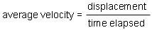
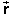
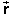

av; SI-unit: m/s.
av; SI-unit: m/s.
Average velocity is defined in analogy to average speed. Instead of taking the ratio 'distance traveled divided by time elapsed', one takes the ratio 'displacement divided by time elapsed'. Thus,

Average velocity is a vector quantity, because it is the ratio of a vector (the displacement) and a scalar (the time elapsed).
Symbol: av; SI-unit: m/s.
Exercise: Position the ball somewhere, and release the mouse
button. Click on the ball again and drag it. Display the applet's
Data boxes, including the expanded average-velocity box obtained by
selecting the Position button. Substitute the values of the
displacement  =
Δ = f - i
=
Δ = f - i
Compare your result to the value of av in the average-velocity Data box.
Also copy the value of the average speed vav from
the average-speed Data box. You will need the values of both av